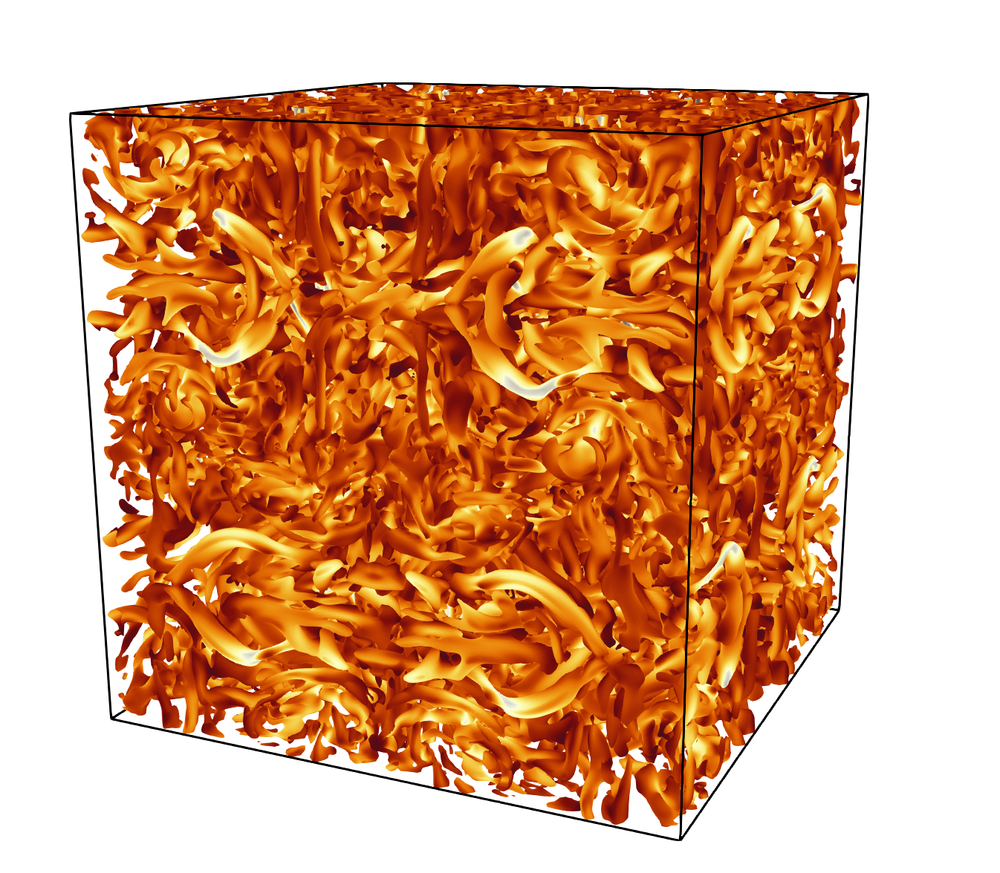

|
MFC
High-fidelity multiphase flow simulation
|
|
MFC
High-fidelity multiphase flow simulation
|
Reference: Chamarthi, A., & Hoffmann, N., & Nishikawa, H., & Frankel S. (2023). Implicit gradients based conservative numerical scheme for compressible flows. arXiv:2110.05461


Reference: Panchal et. al., A Seven-Equation Diffused Interface Method for Resolved Multiphase Flows, JCP, 475 (2023)


Reference: G. B. Skinner and G. H. Ringrose, “Ignition Delays of a Hydrogen—Oxygen—Argon Mixture at Relatively Low Temperatures”, J. Chem. Phys., vol. 42, no. 6, pp. 2190–2192, Mar. 1965. Accessed: Oct. 13, 2024. [Online]. Available: https://doi.org/10.1063/1.1696266.

Reference: V. A. Titarev, E. F. Toro, Finite-volume WENO schemes for three-dimensional conservation laws, Journal of Computational Physics 201 (1) (2004) 238–260.


Reference: C. W. Shu, S. Osher, Efficient implementation of essentially non-oscillatory shock-capturing schemes, Journal of Computational Physics 77 (2) (1988) 439–471. doi:10.1016/0021-9991(88)90177-5.


Reference: P. D. Lax, Weak solutions of nonlinear hyperbolic equations and their numerical computation, Communications on pure and applied mathematics 7 (1) (1954) 159–193.


Reference: Bezgin, D. A., & Buhendwa A. B., & Adams N. A. (2022). JAX-FLUIDS: A fully-differentiable high-order computational fluid dynamics solver for compressible two-phase flows. arXiv:2203.13760
Reference: Ghia, U., & Ghia, K. N., & Shin, C. T. (1982). High-re solutions for incompressible flow using the Navier-Stokes equations and a multigrid method. Journal of Computational Physics, 48, 387-411
Video: https://youtube.com/shorts/JEP28scZrBM?feature=share


References:
P. J. Martínez Ferrer, R. Buttay, G. Lehnasch, and A. Mura, “A detailed verification procedure for compressible reactive multicomponent Navier–Stokes solvers”, Comput. & Fluids, vol. 89, pp. 88–110, Jan. 2014. Accessed: Oct. 13, 2024. [Online]. Available: https://doi.org/10.1016/j.compfluid.2013.10.014

Reference: Coralic, V., & Colonius, T. (2014). Finite-volume Weno scheme for viscous compressible multicomponent flows. Journal of Computational Physics, 274, 95–121. https://doi.org/10.1016/j.jcp.2014.06.003


The Scaling case can exercise both weak- and strong-scaling. It adjusts itself depending on the number of requested ranks.
This directory also contains a collection of scripts used to test strong-scaling on OLCF Frontier. They required modifying MFC to collect some metrics but are meant to serve as a reference to users wishing to run similar experiments.
Pass --scaling weak. The --memory option controls (approximately) how much memory each rank should use, in Gigabytes. The number of cells in each dimension is then adjusted according to the number of requested ranks and an approximation for the relation between cell count and memory usage. The problem size increases linearly with the number of ranks.
Pass --scaling strong. The --memory option controls (approximately) how much memory should be used in total during simulation, across all ranks, in Gigabytes. The problem size remains constant as the number of ranks increases.
For example, to run a weak-scaling test that uses ~4GB of GPU memory per rank on 8 2-rank nodes with case optimization, one could:

Reference: Hillewaert, K. (2013). TestCase C3.5 - DNS of the transition of the Taylor-Green vortex, Re=1600 - Introduction and result summary. 2nd International Workshop on high-order methods for CFD.
This figure shows the isosurface with zero q-criterion. 


References:
P. J. Martínez Ferrer, R. Buttay, G. Lehnasch, and A. Mura, “A detailed verification procedure for compressible reactive multicomponent Navier–Stokes solvers”, Comput. & Fluids, vol. 89, pp. 88–110, Jan. 2014. Accessed: Oct. 13, 2024. [Online]. Available: https://doi.org/10.1016/j.compfluid.2013.10.014
H. Chen, C. Si, Y. Wu, H. Hu, and Y. Zhu, “Numerical investigation of the effect of equivalence ratio on the propagation characteristics and performance of rotating detonation engine”, Int. J. Hydrogen Energy, Mar. 2023. Accessed: Oct. 13, 2024. [Online]. Available: https://doi.org/10.1016/j.ijhydene.2023.03.190